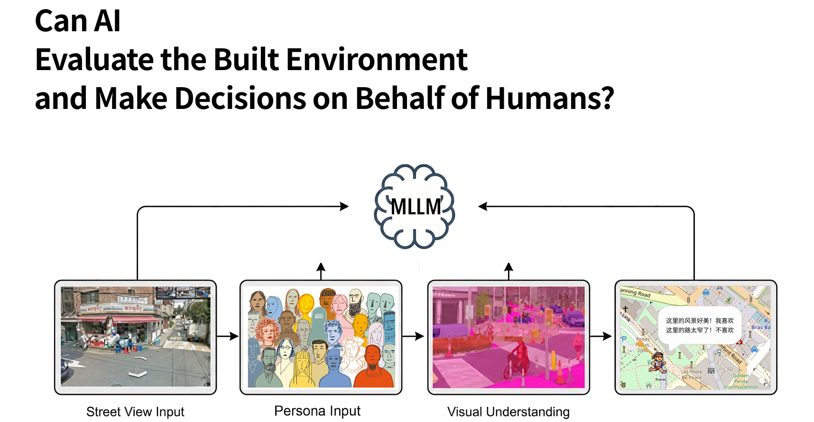

Fig. 0 · Core research question — can an MLLM evaluate built environments on behalf of a human persona?
Urban perception studies have long aggregated street-level imagery into single-point scores, losing the temporal structure of how pedestrians actually experience a city. CityWalkAgent reframes urban walking as a sequential cognitive process: a dual-system VLM agent walks panorama-by-panorama through Google Street View, building short-term memory of recent observations and generating episodic snapshots when narrative shifts occur.
Drawing on Kahneman's dual-process theory, Cullen's Serial Vision, and Lynch's Image of the City, the system separates fast per-waypoint perception (System 1) from slower reflective interpretation, planning, and decision-making (System 2). Five personas — homebuyer, parent, photographer, runner, tourist — perceive identical environments differently through prompt-conditioned evaluation across the four Place Pulse dimensions.
We validate against Place Pulse 2.0's 1.1M human judgments via CLIP+K-NN, achieving Spearman correlations of ρ = 0.57–0.85 across dimensions. The framework reveals within-route variance and hidden barriers that aggregate scoring methods systematically miss.